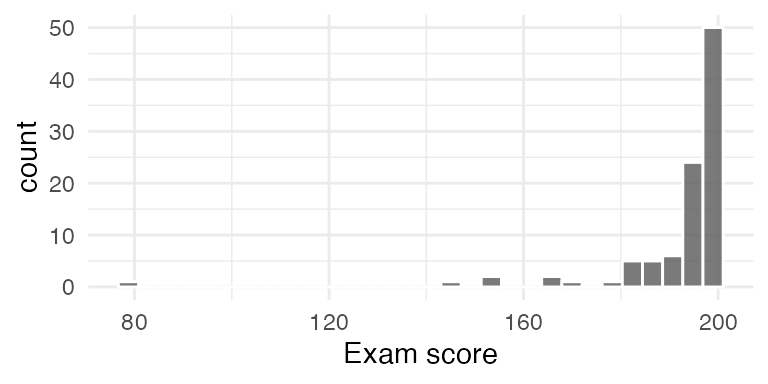

qt(.05, df = 19)
> [1] -1.729133
qt(.975, df = 19)
> [1] 2.093024
qt(.05, df = 25)
> [1] -1.708141
qt(.975, df = 25)
> [1] 2.059539Exam 02 Review
Stat250 S25
Exam II will be held in class Friday of Week 8. The exam is closed book, but you can use the formula sheet provided by me along with one side of one notecard of your own notes. You will also have access to a calculator.
To study, I recommend carefully going through class notes, homework problems, and this handout. After reviewing those materials, I recommend solving lots and lots of practice problems (e.g. the problems in the textbook with answers in the back).
1. Confidence Intervals
- Interpret confidence intervals in the context of the problem
- State the conclusion of a hypothesis test based on a confidence interval
- Know the definition of a confidence interval and the coverage properties
Using the pivotal method
- Know the definition of a pivotal quantity
- Set up a probability statement that can be used to derive a CI from a pivot
- Derive CI’s for population parameters using pivotal quantities
Example question: Suppose that \(X_1, ..., X_n\) form a random sample from an exponential distribution with mean \(1/\lambda\). The sum of iid Exp(\(\lambda\)) random variables is Gamma(\(n, \lambda\)). Based on this fact, it can be shown that \(\frac{\lambda}{2} \sum X_i \sim \text{Gamma}(n, \frac{1}{2})\). Explain why \(\frac{\lambda}{2} \sum X_i\) is a pivotal quantity and then derive a formula for a \((1-\alpha)\) confidence interval for \(\lambda\).
Using a large-sample approximation
- Write down appropriate R code to find quantiles from the \(t\) and \(z\) distributions
- Know what standard error and margin of error refer to
- Check necessary conditions to use a large-sample approximation
- Read and interpret R output
Example question: 20 subjects are enrolled in a weight loss program, and each person’s weight loss over one month was recorded (in pounds). Mean weight loss was 4.5 pounds with a sample standard deviation of 6.3 pounds. Assume that each observation comes from a normal distribution with unknown mean \(\mu\) and unknown variance \(\sigma^2\). It may help to know that:
- Find a 95% confidence interval for \(\mu\)
- What assumptions/conditions must hold for the interval in (a) to be valid?
Example question: A major credit card company is planning a new offer for their current card holders. To test the effectiveness of the campaign, the company sent out offers to a random sample of 50,000 cardholders. Of those, 1184 registered for the new offer. If the acceptance rate is 2% or less, the campaign won’t be worth the expense.
Consider the below R output to help you answer this question
prop.test(x = 1184, n = 50000, conf.level = 0.9, p = .02, alternative = "less")$conf
> [1] 0.00000000 0.02457739
> attr(,"conf.level")
> [1] 0.9
prop.test(x = 1184, n = 50000, conf.level = 0.9, p = .02, alternative = "greater")$conf
> [1] 0.02281426 1.00000000
> attr(,"conf.level")
> [1] 0.9
prop.test(x = 1184, n = 50000, conf.level = 0.9, p = .02, alternative = "two.sided")$conf
> [1] 0.02257725 0.02483475
> attr(,"conf.level")
> [1] 0.9- Which confidence interval is most useful in exploring whether the campaign is worth the expense? Justify your answer.
- Will a 93% confidence interval be wider or narrower? How do you know?
Using bootstrap percentile or bootstrap t distributions
- Explain when a bootstrap percentile or a bootstrap t might be more appropriate than a formula t interval
- Interpret a given interval in context
Example question: The histogram below displays a random sample of 98 exam scores for graduating seniors in a certain country. We are interested in building a 90% confidence interval for \(\mu\), the average exam score.
- If we built a bootstrap percentile interval, formula-t confidence interval, and bootstrap-t confidence interval, would you expect to see nearly identical results? Why or why not?
- Which of the 3 intervals would you prefer in this scenario? Why?

2. Hypothesis Testing
- Interpret results from a testing procedure in context
- Know whether a confidence interval will contain a particular value based on the results from a hypothesis test
- Know all the basic hypothesis testing ideas from Ch3 (test statistic, p-value, statistical significance)
- State null and alternative hypotheses
Large sample approximations
- For a given one-sample, two-sample, or paired testing situation, calculate the appropriate test statistic and associated p-value
- Use proper notation for population parameters
- Read and interpret R output
- Provide R code to find p-values for a given test statistic
- Specify the null distribution
- Check conditions to apply an inferential procedure
Example Question: Subjects in the HELP (Health Evaluation and Linkage to Primary Care) study were asked about their depressive symptoms (CESD score) and homeless status (housed vs. homeless). Higher scores on the cesd measure indicate more depressive symptoms.
| homeless | min | Q1 | median | Q3 | max | mean | sd | n |
|---|---|---|---|---|---|---|---|---|
| homeless | 1.00 | 28.00 | 36.00 | 41.00 | 60.00 | 34.02 | 12.32 | 209 |
| housed | 3.00 | 23.00 | 32.00 | 40.00 | 58.00 | 31.84 | 12.62 | 244 |
- State the appropriate hypotheses to test whether there is a true difference between the CESD score for the groups based on homeless status.
- Calculate the appropriate test statistic (plug in completely, but you do not need to simplify).
- Explain how you would find the p-value for this test. Note that df = 443.365. (A randomly selected stat250 student should be able to follow your explanation and perform the calculation)
Exact tests
- Given a data distribution and \(\alpha\) level, find an appropriate rejection region
- Set up a likelihood ratio test or generalized likelihood ratio test and derive the form of a rejection region
- State why the LRT or GLRT test is desirable
Example question: Suppose \(X_1, ..., X_10\) are a random sample from a population with exponential distribution with \(\lambda > 0\).
- Derive the most powerful test for \(H_0: \lambda = 7\) against \(H_A: \lambda = 5\)
- If we instead want to test \(H_0: \lambda \ge 7\) against \(H_A: \lambda < 7\), explain how the most powerful test statistic would change
Errors and Power
- Know the definition for Type I error, Type II error, and power
- Identify/explain what a Type I and Type II error is in the context of the problem
- Given a type I error and hypotheses, define the rejection region in terms of the sample statistic or test statistic
- Given a testing setup and a value of the parameter in \(H_A\), calculate the type II error rate and power of the test
- Given a testing setup, type I error rate, and desired power; determine the necessary sample size
- Read a power curve and explain how it was found
Example question: The time between arrivals are generally known to follow an exponential distribution. Let \(X_i\) be the time between arrivals at the TSA pre-check line at MSP Airport. Assume that \(X_1, ..., X_5\) are a random sample from an exponential distribution with unknown parameter \(\lambda\). We wish to test \(H_0: \lambda \ge .5\) against \(H_A: \lambda < .5\) using the test statistic \(Y = \sum X_i\). We will reject \(H_0\) if \(Y > c\), where \(c\) is chosen to give \(\alpha = .05\).
- In this setting, \(c=18.3\). Show how this was found.
- Find the power of the test when \(\lambda = .25\).
Multiple Testing
- Calculate the probability of making at least one type I error in a series of \(k\) tests
- Apply the Sidak correction and Bonferroni correction
Example question: I am interested in testing whether there is a difference in the average number of hours slept per night among first-years, sophomores, and juniors. I conduct a random survey and obtain the following results.
| year | min | Q1 | median | Q3 | max | mean | sd | n | missing |
|---|---|---|---|---|---|---|---|---|---|
| fy | 5.31 | 7.18 | 7.69 | 8.19 | 9.53 | 7.70 | 0.74 | 66 | 0 |
| soph | 3.84 | 5.93 | 7.95 | 8.65 | 12.51 | 7.66 | 1.96 | 48 | 0 |
| jr | 5.36 | 7.05 | 7.75 | 8.70 | 10.04 | 7.86 | 1.25 | 25 | 0 |
- If I do the following tests at the \(\alpha = .05\) level:
\(H_0: \mu_{fy} - \mu_{soph} = 0\) against \(H_A: \mu_{fy} - \mu_{soph} \ne 0\)
\(H_0: \mu_{fy} - \mu_{jr} = 0\) against \(H_A: \mu_{fy} - \mu_{jr} \ne 0\)
\(H_0: \mu_{soph} - \mu_{jr} = 0\) against \(H_A: \mu_{soph} - \mu_{jr} \ne 0\)
what is the probability I make at least one Type I error?
What \(\alpha\) level should I use for each test to obtain an overall Type I error rate of \(\alpha^* = .05\) according to the Sidak correction? According to the Bonferroni?
Which correction gives me greater power?